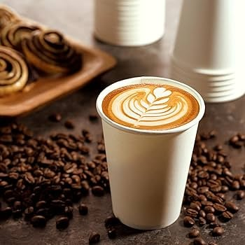

Kape Kultura is a homegrown coffee shop that proudly showcases high-quality coffee beans sourced directly from farmers in Benguet and Sultan Kudarat. Ww offer a selection of freshly brewed coffee, smooth cold brews, and traditional Filipino pastries served with a modern twist. Our primary customers are students, corporate workers, and coffee enthusiasts who are looking for delicious, affordable, and authentic local coffee. We were inspired to start this business to support our local agricultural sector and celebrate the rich heritage of Philippine coffee. Please note that we are open daily from 7:00AM to 10:00PM.
The mission of Kape Kultura is to deliver a cup of coffee filled with passion, story, and community care. Unlike massive global coffee chains, our products are highly affordable without compromising quality because our beans are always fresh from the harvest. Furthermore, every single cup you purchase directly helps sustain the livelihood of local farming families across the country. At Kape Kultura, you are not just drinking high-quality coffee; you you are actively supporting and uplifting Filipino culture

To ensure a fast and secure transaction. We accept secure payments online via the GCash Official Website